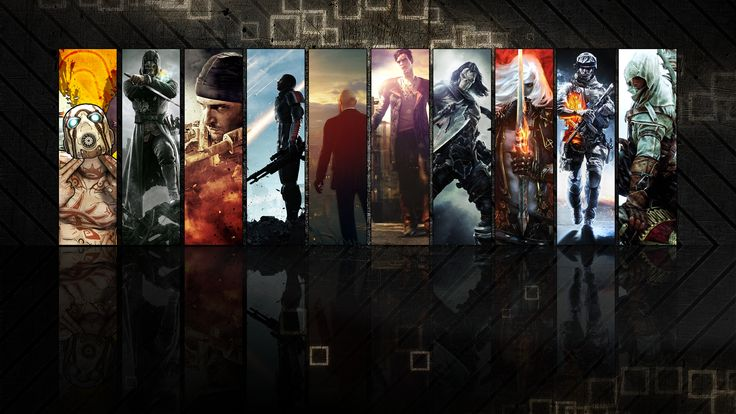
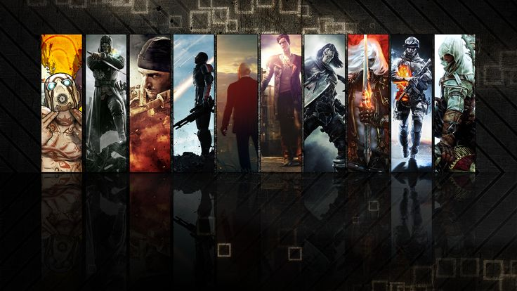

About Me
Who I am?
Hello, I'm Angel Ortega, a passionate cross-platform software developer. When I'm not exploring new galaxies of knowledge and skills in the software development universe, you can find me in two of my favorite hobbies:
Hello, I'm Angel Ortega, a passionate cross-platform software developer. When I'm not exploring new galaxies of knowledge and skills in the software development universe, you can find me in two of my favorite hobbies:
 

I'm a big fan of open world games like Assassin's Creed and Far Cry, where I can explore vast landscapes and embark on exciting adventures. Not only are video games a fun way to relax, but I also appreciate the complexity and creativity that goes into developing these immersive worlds.
I'm a big fan of open world games like Assassin's Creed and Far Cry, where I can explore vast landscapes and embark on exciting adventures. Not only are video games a fun way to relax, but I also appreciate the complexity and creativity that goes into developing these immersive worlds.